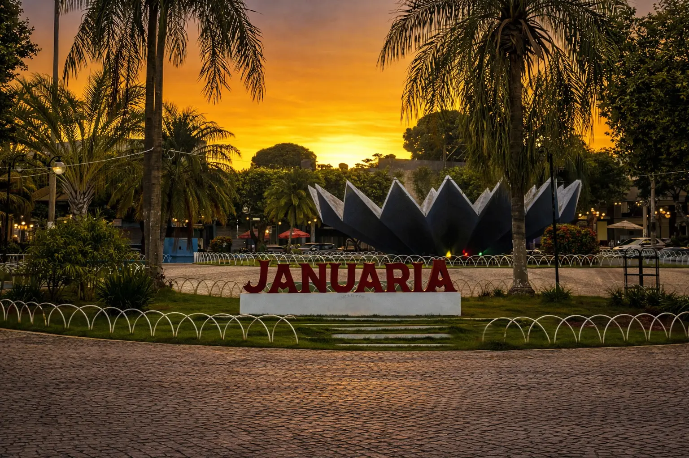

Sobre o local
A Praça Getúlio Vargas é considerada a mais charmosa de Januária. Seu grande destaque é a fonte luminosa em formato de flor de lótus, que à noite encanta moradores e visitantes com um espetáculo de luzes e jatos d’água sincronizados. Localizada na área turística da cidade, a praça está cercada por hotéis, bares, restaurantes, lanchonetes e sorveterias, tornando-se um ponto de encontro agradável para todas as idades. Para os amantes da história, o local também guarda memória: foi ali que existiu a antiga Igreja de Nossa Senhora do Rosário (não confundir com a homônima do distrito de Brejo do Amparo), espaço que marcou uma das centralidades no desenvolvimento do centro histórico de Januária.
Horário de funcionamento: Visitação livre diariamente
Tipo de visita: Visita livre
Formas de pagamento: Não há cobrança para acesso
Pet Friendly: Sim